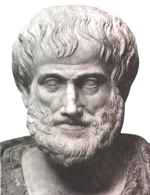
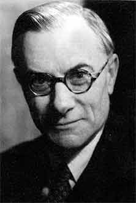
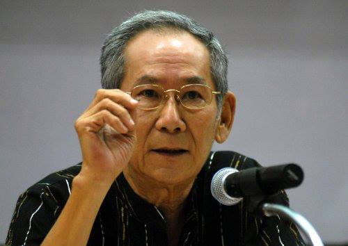
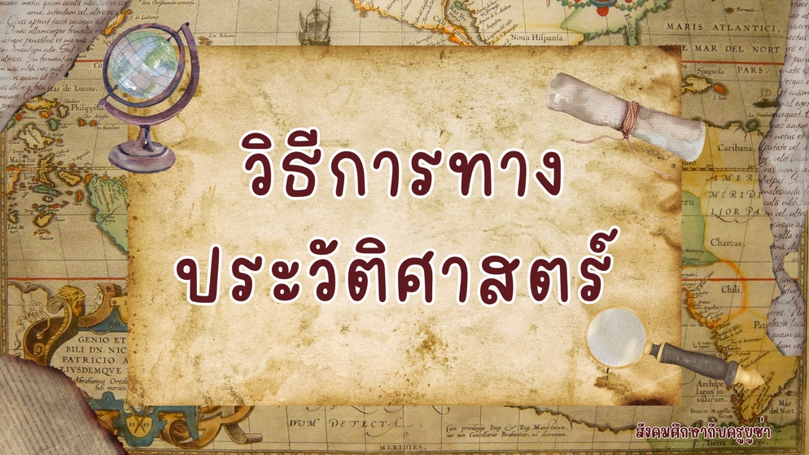
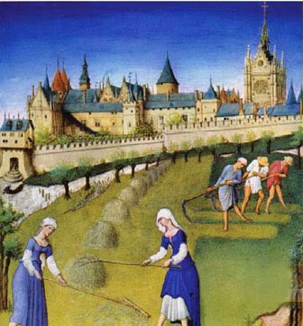
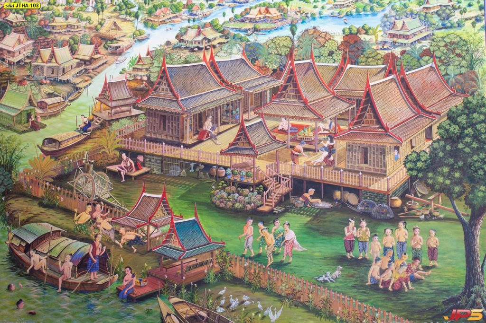

ประวัติศาสตร์คืออะไร?
คำว่า “ประวัติศาสตร์” ในภาษาอังกฤษคือคำว่า History
พจนานุกรมฉบับราชบัณฑิตยสถาน พ.ศ. 2554 ได้ให้คำจำกัดความของ ประวัติศาสตร์ ว่า “วิชาว่าด้วยเหตุการณ์ที่เป็นมาหรือเรื่องราวของประเทศชาติเป็นต้นตามที่บันทึกไว้เป็นหลักฐาน” นอกจากนี้ยังมีคำจำกัดความจากนักประวัติศาสตร์ท่านอื่นๆ ที่ได้ให้ไว้ในฉบับของตนเอง และสื่อสารแนวคิดของตนเองผ่านช่องทางต่างๆ เช่น นิตยสาร วารสาร บทความ จนในยุคปัจจุบันที่สามารถนำเสนอแนวคิดของตนเองผ่านช่องทางออนไลน์ได้
นักประวัติศาสตร์ และ นักโบราณคดี คืออะไร?
นักประวัติศาสตร์คือ
ผู้ที่ศึกษา วิเคราะห์ และตีความเรื่องราวในอดีตของมนุษย์ โดยเน้น หลักฐานที่เป็นลายลักษณ์อักษร เช่น เอกสาร หนังสือ จดหมาย
นักโบราณคดี คือ
ผู้ที่สำรวจ ขุดค้น และวิเคราะห์หลักฐานทางกายภาพ เช่น โครงกระดูก เครื่องมือ ภาชนะดินเผา โบราณสถาน
ทั้งสองมีวิธีการและการใช้หลักฐานต่างกัน แต่ทำงานควบคู่กันเสมอ
ความหมายของวิชาประวัติศาสตร์ นักประวัติศาสตร์ (Historian) ได้ให้คำจำกัดความ และแสดงแนวคิดไว้เป็นหลากหลายทัศนะ ดังเช่น

Aristotle : ประวัติศาสตร์เป็นการบอกกล่าวอย่างมีระเบียบแบบแผนเกี่ยวกับเรื่องราวปรากฏการณ์ธรรมชาติ

E.H. Carr : ประวัติศาสตร์คือเรื่องราวอันต่อเนื่องของการโต้ตอบกันระหว่างประวัติศาสตร์กับหลักฐานข้อเท็จจริงเป็นเรื่องถกเถียงระหว่างปัจจุบันกับอดีตที่ไม่มีที่สิ้นสุด
Arnold J. Toybee : ประวัติศาสตร์คือภาพของการที่พระผู้เป็นเจ้าสร้างโลก และมนุษย์ภาพนี้จะเคลื่อนไปเรื่อยๆ จากจุดกำเนิดคือพระผู้เป็นเจ้าไปสู่จุดหมายปลายทาง คือพระผู้เป็นเจ้าอีก
George Trevelyan : ประวัติศาสตร์เป็นเสมือนซีเมนต์ ซึ่งทำให้การศึกษาทั้งหมดที่เกี่ยวข้องกับธรรมชาติ และความสัมฤทธิ์ของมนุษย์เชื่อมติดต่อกันเป็นอันหนึ่งอันเดียว
James Harvey Robinson : ประวัติศาสตร์เป็นทุกสิ่ง ซึ่งเรารู้เกี่ยวกับทุกสิ่งที่มนุษย์ได้ทำ ได้คิด ได้หวัง หรือได้รู้สึก
Donald Schneider : ประวัติศาสตร์คือมารดาของวิชาสังคมศาสตร์ ประวัติศาสตร์เป็นผลแห่งความพยายามของนักประวัติศาสตร์ ในการที่จะได้ค้นหาหลักฐาน และความจริงที่ปรากฏขึ้นใหม่โดยไม่จำกัดเวลา
Henry Johnson : ประวัติศาสตร์คือทุกสิ่งทุกอย่างที่เกิดขึ้นในโลก เช่น ปรากฏการณ์ตามธรรมชาติ สิ่งต่างๆ ที่เกิดขึ้นกับมนุษย์ถือว่าเป็นประวัติศาสตร์ทั้งสิ้น

ดร.นิธิ เอียวศรีวงศ์ : ประวัติศาสตร์เป็นการศึกษาความเป็นมาของมนุษย์ในอดีต ตั้งแต่เมื่อเริ่มมีการจดบันทึกกันด้วยลายลักษณ์อักษร
ดร.สืบแสง พรหมบุญ : ได้ให้แนวคิดเกี่ยวกับความหมายของประวัติศาสตร์อย่างกว้างๆ เป็น 2 ประการคือ
1. ประสบการณ์ทั้งมวลในอดีตของมนุษย์ที่เกิดขึ้นตามความเป็นจริง
2. การสร้างประสบการณ์ในอดีตที่เห็นว่ามีคุณค่าขึ้นมาใหม่ โดยอาศัยหลักฐานต่างๆ ประกอบกับความคิด และการตีความของนักประวัติศาสตร์
ทำไมเราจึงควรเรียนรู้ประวัติศาสตร์
ช่วยพัฒนาทักษะในการเชื่อมโยงสิ่งต่างๆ สามารถใช้ฝึกทักษะการคิดวิเคราะห์ การสืบค้นข้อมูล การหาเหตุผลและการแก้ปัญหา ซึ่งนำไปใช้ได้ในทุกด้านของชีวิต
สร้างความรักชาติและความภาคภูมิใจในตนเอง รู้ซึ้งถึงความเสียสละของบรรพบุรุษ และเห็นคุณค่ามรดกทางวัฒนธรรมที่สืบทอดมา แต่ต้องระวังหากรัฐใช้เป็นเครื่องมือสร้างชาตินิยม
และอื่นๆ สามารถหาเหตุผลได้หลายประการตามใจของผู้เรียน เช่น การศึกษาประวัติศาสตร์เพื่อหาแนวทางในการแต่งนิยาย
วิธีการทางประวัติศาสตร์
วิธีการทางประวัติศาสตร์ หมายถึง วิธีการ หรือขั้นตอนต่าง ๆ ที่ใช้ในการศึกษาค้นคว้าเกี่ยวกับเรื่องราวทางประวัติศาสตร์ โดยเฉพาะอาศัยจากหลักฐานที่เป็นลายลักษณ์อักษรเป็นสำคัญ ประกอบกับหลักฐานอื่น ๆ เช่น หลักฐานทางโบราณคดี เพื่อให้สามารถฟื้นอดีตหรือจำลองอดีตขึ้นมาใหม่ ได้อย่างถูกต้อง ตรงประเด็นและลำดับเรื่องราวได้อย่างใกล้เคียงกับความเป็นจริงที่สุด
วิธีการทางประวัติศาสตร์มีความสำคัญ คือ ทำให้เรื่องราว กิจกรรม เหตุการณ์ที่เกิดขึ้นในประวัติศาสตร์มีความน่าเชื่อถือ มีความถูกต้องเป็นจริง หรือใกล้เคียงกับความเป็นจริงมากที่สุด
วิธีการทางประวัติศาสตร์มีประโยชน์ ทั้งต่อการศึกษาประวัติศาสตร์ที่ทำให้ได้เรื่องราวทางประวัติศาสตร์ที่น่าเชื่อถือ ประโยชน์อีกด้านหนึ่ง คือ ผู้ที่ได้รับการฝึกฝน การใช้วิธีการทางประวัติศาสตร์จะทำให้เป็นคนละเอียด รอบคอบ มีการตรวจสอบเรื่องราวที่ศึกษา รวมทั้งนำมาปรับใช้ในชีวิตประจำวันได้ โดยจะทำให้เป็นผู้รู้จักทำการประเมินเหตุการณ์ต่าง ๆ ว่า มีความน่าเชื่อถือเพียงใด หรือก่อนที่จะเชื่อถือข้อมูลของใคร ก็นำวิธีทางประวัติศาสตร์ไปตรวจสอบก่อน

วิธีการทางประวัติศาสตร์แบ่งได้เป็น 5 ขั้นตอนดังนี้
1. การกำหนดหัวเรื่องที่จะศึกษา
เริ่มจากกำหนดเรื่องที่ต้องการศึกษา โดยอาจจะกำหนดประเด็นไว้กว้างๆ ก่อน แล้วจึงค่อยจำกัดประเด็นให้แคบลงภายหลัง การกำหนดเรื่องอาจเกี่ยวกับเหตุการณ์ความเจริญและความเสื่อมของอาณาจักรต่างๆ หรือเรื่องราวของบุคคลใดบุคคลหนึ่ง ที่มีชีวิตอยู่ในอดีตในช่วงเวลาหนึ่งๆ ซึ่งยังมีหลักฐานหลงเหลือในค้นคว้าอยู่
2. การรวบรวมหลักฐาน
เมื่อกำหนดเรื่องที่ต้องการศึกษาได้แล้วก็จะทำการรวบรวมหลักฐานที่เกี่ยวข้อง ทั้งหลักฐานที่เป็นลายลักษณ์อักษร และหลักฐานที่ไม่เป็นลายลักษณ์อักษร หลักฐานทางประวัติศาสตร์แบ่งออกเป็น 2 ประเภท ได้แก่
(1) หลักฐานชั้นต้น เป็นหลักฐานร่วมสมัยของผู้ที่เกี่ยวข้องกับเหตุการณ์โดยตรง เช่น จดหมาย
(2) หลักฐานชั้นรอง เป็นหลักฐานที่จัดทำขึ้นโดยอาศัยหลักฐานชั้นต้น หรือโดยบุคคลที่ไม่ได้เกี่ยวข้อง ไม่ได้รู้เห็นเหตุการณ์ด้วยตนเอง แต่ได้รับรู้โดยผ่านบุคคลอื่น
3. การประเมินคุณค่าของหลักฐาน
หลักฐานทางประวัติศาสตร์ที่ค้นคว้ามาได้นี้ ต้องผ่านการประเมินคุณค่าที่เรียกว่า “วิพากษ์วิธีทางประวัติศาสตร์” ซึ่งมีอยู่ 2 วิธี ดังนี้
(1) วิพากษ์วิธีภายนอก คือการประเมินคุณค่าของหลักฐานจากลักษณะภายนอกของหลักฐานทางประวัติศาสตร์ วิธีนี้ทำเพื่อประเมินหลักฐานว่าเป็นของแท้หรือไม่ โดยพิจารณาได้จากสิ่งที่ปรากฏภายนอก
(2) วิพากษ์วิธีภายใน คือการประเมินคุณค่าของหลักฐานจากข้อมูลภายในหลักฐานนั้น เป็นต้นว่า มีชื่อบุคคล สถานที่ เหตุการณ์ ในช่วงเวลาที่หลักฐานนั้นทำขึ้นหรือไม่
4. การวิเคราะห์และจัดหมวดหมู่ข้อมูล
ทำการวิเคราะห์ข้อมูลในหลักฐานนั้นว่า ให้ข้อมูลทางประวัติศาสตร์อะไรบ้าง มีความสมบูรณ์เพียงใดหรือมีจุดมุ่งหมายอะไร เมื่อได้ข้อมูลแล้วก็หาความสัมพันธ์ของประเด็นต่างๆ และตีความข้อมูลว่ามีข้อเท็จจริงใดที่ซ่อนเร้นอำพรางอยู่ ในการวิเคราะห์ข้อมูล ผู้ศึกษาต้องมีความละเอียดรอบคอบ วางตัวเป็นกลาง มีจินตนาการ และควรมีความรอบรู้ในด้านอื่นๆ ประกอบด้วย
5. การเรียบเรียงและการนำเสนอ
นำข้อมูลทั้งหมดมาเรียบเรียงและนำเสนอให้ตรงกับประเด็นหรือหัวเรื่องที่ตั้งไว้ในขั้นตอนแรก ควรอธิบายเหตุการณ์อย่างเป็นระบบ สอดคล้องต่อเนื่องมีการโต้แย้งหรือสนับสนุนผลการศึกษาของเก่าโดยให้ข้อมูลสนับสนุนอย่างมีน้ำหนัก และต้องเป็นกลาง นำเสนอผ่านช่องทางต่างๆ เช่น ช่องทางออนไลน์ในปัจจุบัน
การแบ่งยุคสมัยทางประวัติศาสตร์
ก่อนอื่นต้องเรียนรู้ที่มาก่อนการเกิดอารยธรรม คือยุคอะไรมาก่อน
การแบ่งยุคสมัยทางประวัติศาสตร์ คือ การแบ่งช่วงเวลาในการศึกษาเรื่องราวและการใช้ชีวิตของมนุษย์ในอดีตออกเป็นยุคสมัยต่าง ๆ เนื่องจากเป็นช่วงเวลาที่ยาวนานมาก เพื่อให้ง่ายต่อการศึกษาเรื่องราวในอดีต และยังทำให้เกิดความเข้าใจตรงกันและเห็นถึงลักษณะสำคัญของแต่ละยุคสมัยได้อีกด้วย สามารถแบ่งยุคสมัยทางประวัติศาสตร์ ได้ 2 ยุค ได้แก่ ยุคก่อนประวัติศาสตร์ และยุคประวัติศาสตร์ โดยใช้ “ตัวอักษร” เป็นเกณฑ์ในการแบ่ง ทำให้แต่ละอารยธรรมจะมีการเข้าสู่ยุคประวัติศาสตร์ไม่พร้อมกันขึ้นอยู่กับว่าอารยธรรมใดสามารถคิดค้นตัวอักษรได้ก่อนกัน อักษรแรกของโลกที่ได้รับการยอมรับอย่างกว้างขวางคือ อักษรลิ่ม (Cuneiform) ของชาวสุเมเรียนในเมโสโปเตเมีย
ยุคก่อนประวัติศาสตร์
ยุคก่อนประวัติศาสตร์ คือ ยุคที่มนุษย์ยังไม่มีการประดิษฐ์ตัวอักษรใช้เพื่อบันทึกเรื่องราวต่าง ๆ การศึกษาประวัติศาสตร์ในยุคนี้จึงต้องอาศัยการตีความ และการสันนิษฐานจากหลักฐานทางโบราณคดี เช่น เครื่องมือเครื่องใช้ต่าง ๆ แบ่งออกได้เป็น 2 ยุค ดังนี้
1. ยุคหิน คือ ยุคที่มนุษย์รู้จักใช้หินเป็นเครื่องมือเครื่องใช้ แบ่งเป็น 3 ยุคย่อย ได้แก่
ยุคหินเก่า (100,000 – 500,000 ปีก่อนคริสตกาล)
ยุคหินกลาง (7,000 – 12,000 ปีก่อนคริสตกาล)
ยุคหินใหม่ (7,000 – 3,000 ปีก่อนคริสตกาล)
2. ยุคโลหะ คือ ยุคที่มนุษย์รู้จักนำโลหะมาเป็นเครื่องมือเครื่องใช้แทนหิน มีอายุ 5,600 – 7,000 ปีก่อน แบ่งเป็น 2 ยุคย่อย ได้แก่
ยุคสำริด (3,000 – 1,200 ปีก่อนคริสตกาล)
ยุคเหล็ก (1200 – 500 ปีก่อนคริสตกาล แตกต่างกันไปแต่ละภูมิภาค)

ยุคประวัติศาสตร์
ยุคประวัติศาสตร์ คือ ช่วงที่มนุษย์เริ่มรู้จักการประดิษฐ์ตัวอักษรขึ้นเพื่อใช้บันทึกเรื่องราวต่าง ๆ ทำให้มนุษย์ในยุคหลังสามารถเข้าใจเรื่องราวในช่วงเวลาดังกล่าวได้ ผ่านการศึกษาและตีความจากหลักฐานลายลักษณ์อักษรต่าง ๆ เช่น ศิลาจารึก พงศาวดาร เป็นต้น
หากแบ่งตามประวัติศาสตร์สากลแล้ว สามารถแบ่งได้เป็น 4 สมัย ดังนี้
1.สมัยโบราณ คือ สมัยที่เริ่มนับตั้งแต่มนุษย์เริ่มตั้งถิ่นฐานเป็นหลักแหล่ง มีตัวอักษรใช้ มีอารยธรรม และสิ้นสุดลงเมื่ออารยธรรมโรมันล่มสลาย ในปี ค.ศ.476
2.สมัยกลางหรือยุคมืด คือ สมัยที่เริ่มขึ้นในปี ค.ศ.476 เป็นสมัยที่ยุโรปตกอยู่ภายใต้การปกครองของเผ่าต่าง ๆ จนถึง ค.ศ.1453
3.สมัยใหม่ คือ สมัยที่เริ่มต้นเมื่อปี ค.ศ.1453 เป็นสมัยที่ยุโรปฟื้นตัวจากการถูกครอบงำและเริ่มฟื้นฟูศิลปวัฒนธรรม ไปจนถึงสงครามโลกครั้งที่ 1 ในปี ค.ศ.1914
4.สมัยปัจจุบัน คือ สมัยที่เริ่มต้นหลังสิ้นสุดสงครามโลกครั้งที่ 1 ในปีค.ศ.1918 ถึงปัจจุบัน
